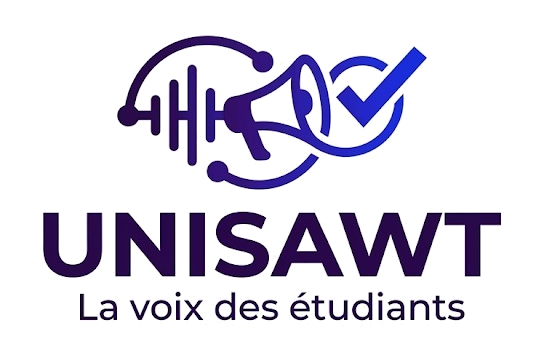

UNISAWT · ÉTUDE DE MARCHÉ
Questionnaire
UNISAWT
La version complète pour mieux comprendre les besoins des étudiants et construire une solution utile, simple et adaptée.

La version complète pour mieux comprendre les besoins des étudiants et construire une solution utile, simple et adaptée.